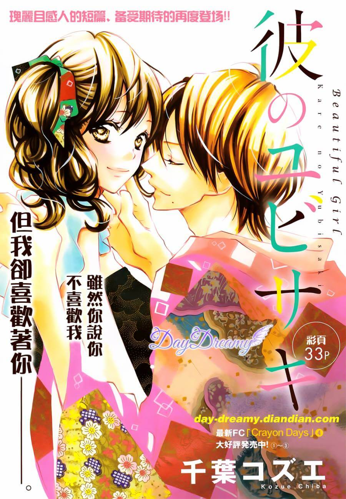

INFORMACIÓN
Titulo:
Kare no Yubisaki
Autor:
Chiba Kosue
Genero:
Romance, One-shot
Moemi está enamorada del chico nuevo en la escuela y no tiene miedo de demostrarlo. ¿El problema? Su familia tiene un grupo de kabuki itinerante, y se van de la ciudad dentro de diez días. ¿Puede ella ganárselo antes de que él desaparezca de su vida para siempre?